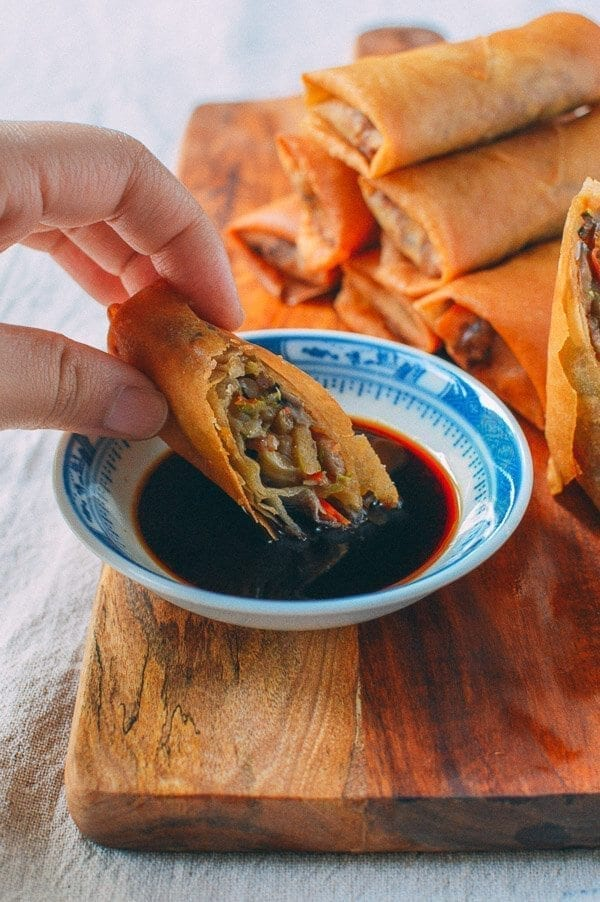

Odin Recipes
Spring Rolls

These dim sum-style Chinese spring rolls and tangy, old-school dipping sauce are from an old family recipe. Find out how to make our spring roll recipe yourself!
Ingredients
FOR PORK MARINADE
- 8 ounces finely shredded pork loin(225g)
- ¼ teaspoon salt
- ½ teaspoon sesame oil
- 1 teaspoon Shaoxing wine
- ½ teaspoon cornstarch
- ¼ teaspoon white pepper
Springrool filling:
- 2 tablespoons oil
- 1 clove garlic (minced)
- 10 dried shiitake mushrooms (soaked until softened and thinly sliced)
- 2 medium carrots (julienned, about 1 cup)
- 1 cup bamboo shoots (julienned; fresh is preferred, but canned is fine too)
- 1 small napa cabbage0 (julienned, about 6 cups)
- Tablespoon Shaoxing wine
- 2 tablespoons lights soy suace
- 1 teaspoon sesame oil
- ½ teaspoon salt
- ¼ teaspoon sugar
- 2 tablespoons cornstarch(dissolved in 2 tablespoon cold water)
For Wrapping:
- 1 package spring roll wrappers
(8" squares; this recipe makes about 20 spring rolls)
- 1 tablespoon cornstarch(dissolved in 1 tablesoon boiling water for sealing)
- Canola oil
Dipping sauce:
- 2 teaspoons sugar
- 2 teaspoons hot water
- teaspoon worcestrershire sauce
- tablespoon soy sauce
Instructions
- Mix the pork with the marinade ingredients and set aside for about 30 minutes. In the meantime, prepare the rest of the ingredients. Cut all of the vegetables to approximately the same size. You want everything the same size so each ingredient blends together.
- Brown the pork over high heat in 2 tablespoons of oil, and add the garlic, mushrooms and carrots. Stir fry for 30 seconds, and add the bamboo shoots, napa cabbage, and Shaoxing wine. Continue stir-frying for a minute. Adjust the heat to simmer the mixture, as the napa cabbage will release a lot of moisture.
- Stir in the soy sauce, sesame oil, salt, white pepper, and sugar. At this time, you have the option of adding 1/4 cup of the decanted water from soaking the dried mushrooms. It strengthens the mushroom flavor, so this is purely according to your personal preference. You may also have to simmer the filling longer to reduce the additional liquid.
- Continue simmering the filling for another 3 minutes--until the napa cabbage is completely wilted--and stir in the corn starch slurry to thicken. How much slurry you add depends upon the wetness of the filling (this varies if your cabbage had more moisture or if you did add the optional mushroom water), but there should be no standing liquid at all.
- Transfer the filling to a large shallow bowl, and let cool. Place into the refrigerator to cool further—at least one hour. It’s best to start with a cold filling for easier wrapping. The key to wrapping spring rolls is making sure that they’re tight, yet not overstuffed. It's best to use fresh spring roll wrappers if you can, as freezing the wrappers can result in the spring roll skin being a bit too damp.
- Place the wrapper on a flat surface so that a corner is facing toward you. Use about two spoonfuls of the mixture per spring roll, and spoon it about 2 inches from the corner that is closest to you. Roll it over once, and, like you’re making a burrito, fold over both sides. Continue rolling it into a cigar shape. With your fingers, brush a bit of the cornstarch water onto the corner of the wrapper that is farthest from you to seal it.
- Place each roll on a tray. This recipe makes about 18-20 spring rolls. You can also freeze these spring rolls on the tray overnight, and transfer them to a zip-lock bag when they are completely frozen for future use. We usually fry some fresh and freeze the rest, unless we are hosting a party, in which case, these go like hot cakes!
- To fry the spring rolls, fill a small pot (which requires less oil) with oil until it’s 2 to 3 inches deep. Heat the oil slowly over medium heat until it reaches 325 degrees. Gently add the spring rolls one at a time, frying in small batches. Carefully roll them in the oil so they cook evenly until golden brown and transfer them to a plate lined with paper towels.
- Prepare the dipping sauce by adding all ingredients to a small sauce pan. Mix and heat until just simmering and pour into a small bowl. Serve the spring rolls hot with the dipping sauce!git